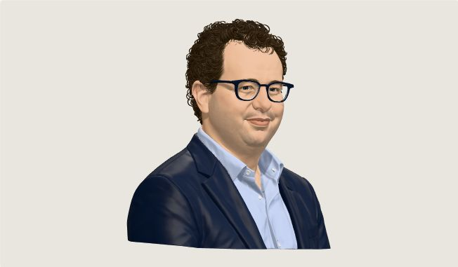
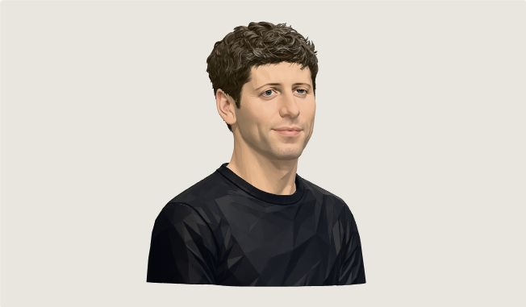
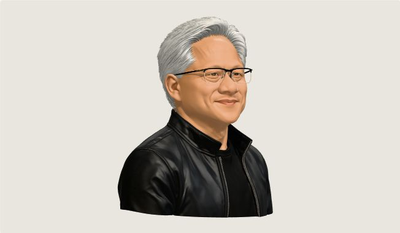
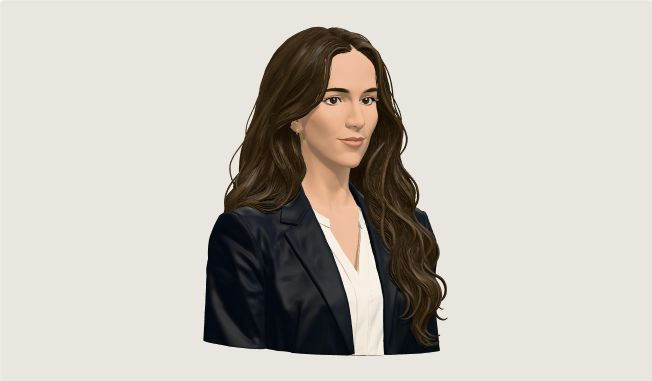
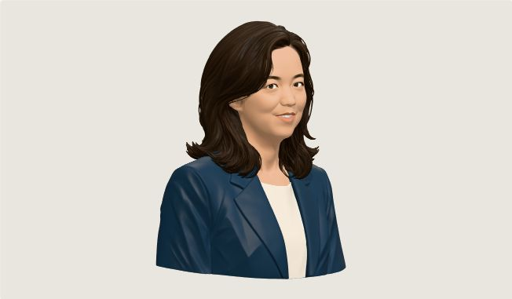

San Theft Auto / Character workshop
Six new faces.
Actual 3D character studies, built in the approved cartoon direction.

Dario Amodei

Sam Altman
Elon Musk

Jensen Huang
Fully accelerated.
Mira Murati
